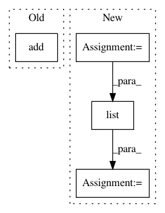

ad8e98817f58c721f7173e188281ccec251ef7a8,tasks/sequential.py,,,#,16
Before Change
model = Sequential()
model.add(Embedding(max_features, 128, input_shape=(maxlen,)))
model.add(TCN(nb_filters=64,
kernel_size=6,
dilations=[1, 2, 4, 8, 16, 32, 64]))
model.add(Dropout(0.5))
model.add(Dense(1, activation="sigmoid"))
model.summary()
After Change
y_train = np.array(y_train)
y_test = np.array(y_test)
tcn = TCN(nb_filters=64,
kernel_size=6,
dilations=[1, 2, 4, 8, 16, 32, 64])
model = Sequential()
model.add(Embedding(max_features, 128, input_shape=(maxlen,)))
model.add(tcn)
model.add(Dropout(0.5))
model.add(Dense(1, activation="sigmoid"))
nodes = tcn.skip_connections
model.compile("adam", "binary_crossentropy", metrics=["accuracy"])
nodes = list(tcn.residual_blocks[0].layers_outputs)[-1], list(tcn.layers_outputs)[2]
// define layers before a first evaluation.
hello = list(tcn.layers_outputs)
In pattern: SUPERPATTERN
Frequency: 4
Non-data size: 4
Instances
Project Name: philipperemy/keras-tcn
Commit Name: ad8e98817f58c721f7173e188281ccec251ef7a8
Time: 2020-01-06
Author: premy.enseirb@gmail.com
File Name: tasks/sequential.py
Class Name:
Method Name:
Project Name: RaRe-Technologies/gensim
Commit Name: 680de8d4f35325e7486c07c4e06422929e826b57
Time: 2019-01-10
Author: __Singleton__@hackerdom.ru
File Name: gensim/corpora/lowcorpus.py
Class Name: LowCorpus
Method Name: line2doc
Project Name: facebookresearch/ParlAI
Commit Name: 72c304fa7cac16ed19d8bc75a017f17c8073dd2f
Time: 2020-02-13
Author: roller@fb.com
File Name: parlai/core/torch_generator_agent.py
Class Name: TorchGeneratorAgent
Method Name: _compute_fairseq_bleu
Project Name: PyMVPA/PyMVPA
Commit Name: c24fdc1414900a4172c996cdc2459a494322ba2e
Time: 2008-05-05
Author: debian@onerussian.com
File Name: tests/test_transerror.py
Class Name: ErrorsTests
Method Name: testConfusionMatrix